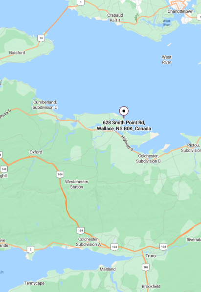
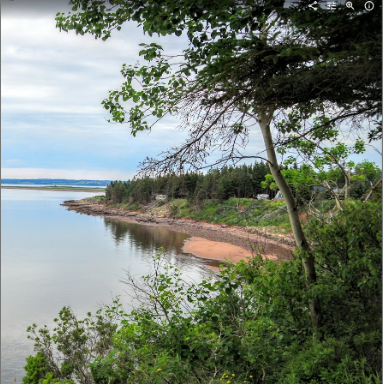
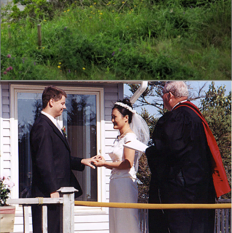
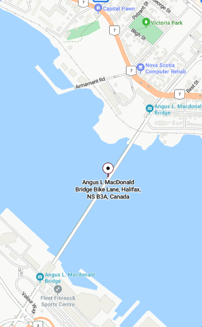
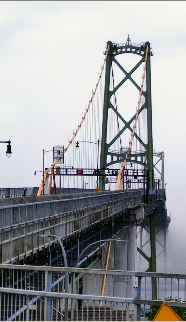
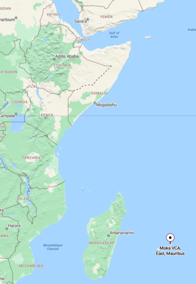
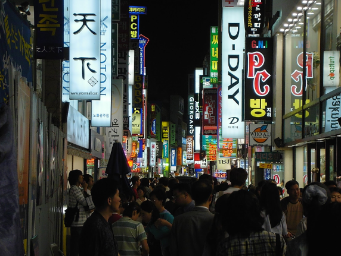
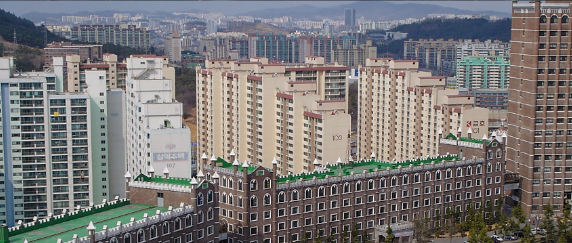
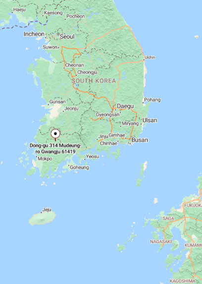
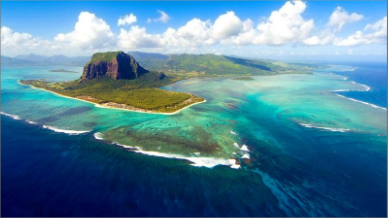

Complete the quick Citizenship 9 intro survey posted in Google Classroom to log your background perspectives.
Open the interactive Places Studio, look up your 3-letter PIN, drop Leaflet map pins, and write your 3–5 sentence reflections.
Preview your live 7-slide presentation deck and single-screen portfolio dossier ready for peer sharing and grading.
Childhood home, family camp, or root location filled with core memories.
Dartmouth parks, sports fields, gyms, or hubs where you gather.
Ancestral homeland, family origins, or cultural traditions abroad.
Dream destination you have never visited but want to experience.
A childhood song tied forever to a place, family ride, or memory.
Your childhood home, family camp, cottage, or root location filled with your earliest core memories.
A physical location that anchors your personal biography and family roots. Where you spent summers, learned to ride a bike, grew up, or feel completely at home.
Your first house, grandparent's backyard, family cottage, annual camping spot, or neighborhood street where you made your first friends.
Write 3–5 sentences explaining why this place shaped who you are today, any milestone moments, and attach 1–2 authentic photos.



Dartmouth parks, sports fields, arenas, rec centers, bridges, or local hubs where you gather and connect.
A shared public space in your town or neighborhood where community life happens, where people interact, practice, commute, or play together.
Shubie Park, Dartmouth Harbourwalk, sports complex/rink, Alderney Landing ferry terminal, Bicentennial school grounds, or the two harbour bridges.
Explain how this shared space impacts local life, who uses it, and how it connects people as active citizens.


Ancestral homeland, family origins, birthplace, or international culture that connects you to the wider world.
An international location that ties into your heritage, family history, cultural foods, languages, or where you/your relatives lived.
Where were your parents or grandparents born? What country does your family visit or have deep culinary/cultural traditions with?
Describe your cultural roots or international experiences, and how having global ties broadens your perspective as a Canadian citizen.



A dream destination on Earth that you have never visited yet, but feel deeply inspired to experience one day.
A destination anywhere on the globe that sparks your imagination, curiosity, or travel goals—whether a natural wonder, historic city, or tropical island.
A place you've read about, seen in a documentary, heard a friend talk about, or want to study/explore in your future adventures.
Explain why this destination is at the top of your bucket list, what you hope to see/do, and what excites you about its culture or landscape.


A childhood song that instantly transports you back to a specific place, family car ride, summer, or memory.
Must be a song from your childhood (Grade 3 or earlier) that has a powerful sensory association with a place in your life.
A song your parents played on repeat in the minivan, a track from a memorable road trip, a song you sang at camp, or family celebrations.
Explain why this song triggers that specific place and feeling whenever you hear it. Find and embed the YouTube video link!
Write 3–5 complete sentences per place. Share real memories, milestone moments, or cultural connections—not just a 1-sentence caption.
Use the interactive Leaflet map to drop pins right on your exact locations (local in Dartmouth/Halifax, and across the globe).
Attach clear photos (via web link or the new 📁 Upload button) and link your childhood song on YouTube.